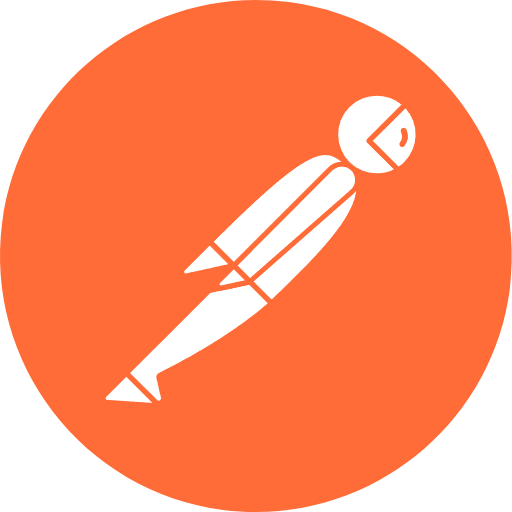

Nathenale's Portfolio
About me
I count myself as a competent and determined individual. Persistence is one of my greatest traits; once I have committed to accomplishing something, there is little to nothing that can be done to deter me from the path. Complacency is a word that is unfamiliar to me as I am always seeking to expand and develop my skills in whatever area possible, whether it be related to soft interpersonal skills or technical skills. As a home-schooled student, I gained the skills to be completely independent and learn on my own, but that is not an obstacle to my ability to function smoothly and efficiently in a team.
Education
- 2023 - 2024 | HyperionDev - Obtained a Higher Certificate in Full Stack Web Development & Software Engineering and ranked top 3 among +400 students in my course. Here is my Completion Certificate and my HyperionDev Portfolio.
- 2021 - 2022 | IIE Varsity College - Obtained a Higher Certificate in IT Support Services with 5 distinctions.
- 2017 - 2021 | Cambridge International Education (Home School) - Passed with 2 AS levels and 5 IGCSEs to get a National Senior Certificate.
- 2015 - 2016 | SAHETI - Attended high school for grade 8 and 9.
Work experience
I haven't gathered any work experience in the tech industry yet.
Skills
Languages
 C#
C#
 Java
Java
 JavaScript
JavaScript
 HTML
HTML
 CSS
CSS
Frameworks & Libraries
 React.js
React.js
 Redux.js
Redux.js
 Node.js
Node.js
 Express.js
Express.js
 .NET / ASP.NET
.NET / ASP.NET
 Bootstrap
Bootstrap
 jQuery
jQuery
Tools
 Git
Git
 Docker
Docker
 WordPress
WordPress
 Postman
Databases
 MongoDB
MongoDB
 MySQL
MySQL